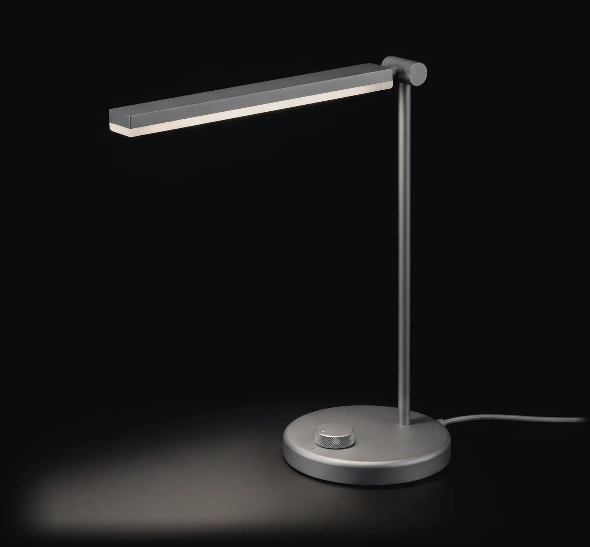
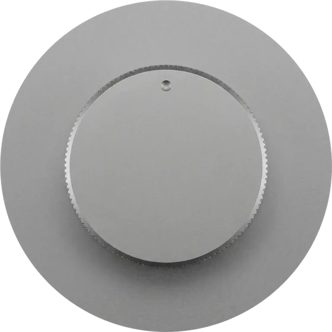
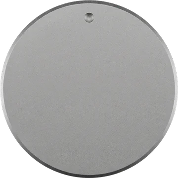
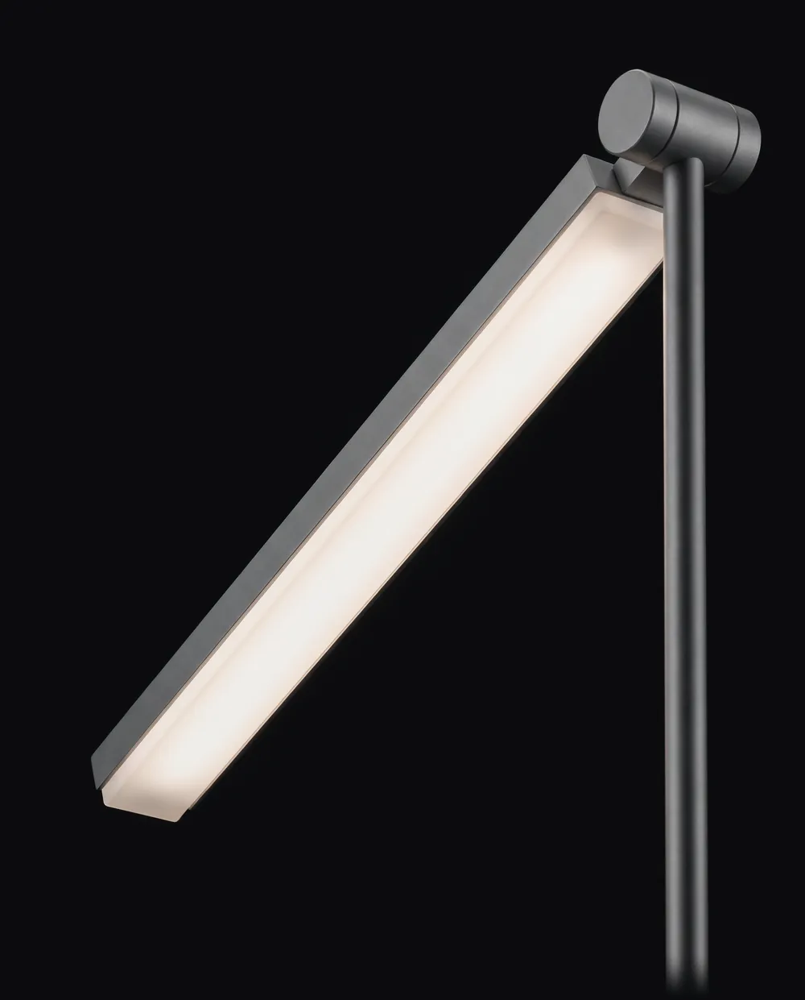
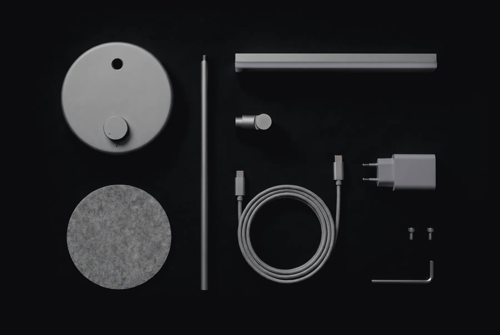
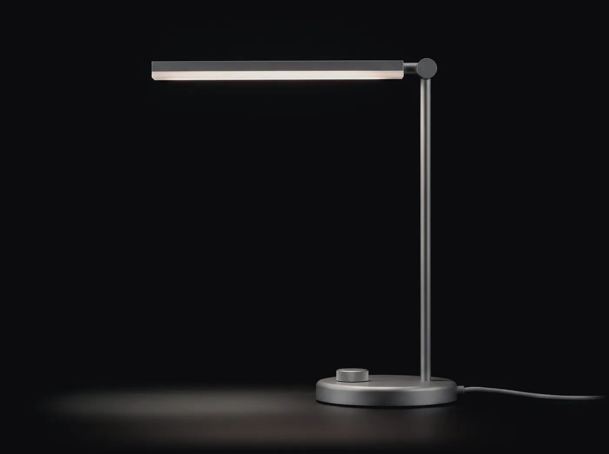

곁방이 만든 첫 책상 스탠드
이슥
밤이 이슥하도록 책상에 앉아 있는 사람을 위한 스탠드입니다. 다이얼 하나로 밝기 다섯 단계와 빛의 색 세 가지를 고르고, 빛은 책상 위에만 고르게 떨어집니다.

돌리면 밝기, 누르면 빛의 색
스위치는 받침 앞의 다이얼 하나입니다. 오른쪽으로 돌리면 걸림이 다섯 번 느껴지며 밝아지고, 왼쪽 끝까지 돌리면 꺼집니다. 윗면을 누를 때마다 빛의 색이 바뀝니다. 여기서 돌려 보세요.
사진은 모두 같은 책상을 같은 자리에서 찍었고, 방의 다른 불은 껐습니다.


끌어서 돌리고, 한 번 누르면 빛의 색이 바뀝니다. 키보드로는 화살표로 돌리고 스페이스로 누릅니다.
다이얼을 처음 돌리면 걸림 소리가 켜집니다.
책상 한 장만큼 고르게
머리는 길이 36 cm의 납작한 막대입니다. 둥근 갓처럼 한 점에 빛을 모으지 않고 책상 앞쪽을 넓게 덮어서, 공책 이쪽 끝과 저쪽 끝의 밝기가 크게 다르지 않습니다. 눈에 보이는 것은 젖빛 확산판뿐이고 LED 알갱이는 보이지 않습니다.

- 650 lm가장 밝게
- 다섯 단계는 25, 95, 230, 420, 650 lm입니다. 밤늦게 책을 읽을 때는 3단계로 충분합니다.
- Ra 97연색지수
- 빨간 색연필이 낮에 보던 빨강으로 보입니다(R9 92). 세 가지 빛의 색 모두 같은 값입니다.
- 110°빛이 퍼지는 각
- 머리를 책상 위 40 cm에 두면 폭 80 cm, 깊이 50 cm 면이 500 lx를 넘습니다.
- 깜박임 없음정전류 구동
- 밝기를 낮출 때 전류를 끊었다 잇지 않고 흐르는 양을 줄입니다. 휴대폰으로 찍어도 화면에 줄무늬가 생기지 않습니다.
머리 아래 40 cm, 책상 가운데에서 좌우로 잰 값입니다. 흰 선이 지금 다이얼의 단계, 회색 선이 가장 밝을 때입니다.
표로 보기
| 단계 | 가운데 | 좌우 20 cm | 좌우 40 cm | 좌우 60 cm |
|---|---|---|---|---|
| 1단계 25 lm | 44 | 36 | 19 | 7 |
| 2단계 95 lm | 168 | 137 | 74 | 26 |
| 3단계 230 lm | 407 | 331 | 178 | 63 |
| 4단계 420 lm | 743 | 604 | 325 | 116 |
| 5단계 650 lm | 1,150 | 935 | 503 | 179 |
쇠와 알루미늄, 펠트 한 장
어둑시의 두 사람 작업실에서 설계하고, 받침과 기둥은 같은 도시의 금속 공장에서 깎습니다. 접착제 없이 나사 두 개로 조립해서 고장 난 부분만 바꿀 수 있습니다.

- 받침 강철 1.9 kg. 모래를 뿜어 결을 내고 회색으로 분체 도장했습니다. 다이얼이 붙어 있습니다.
- 펠트 양모 펠트 3 mm. 책상에 흠이 나지 않게 받침 밑에 붙입니다.
- 기둥 지름 12 mm 스테인리스강 봉.
- 머리 알루미늄 압출, 젖빛 아크릴 확산판, LED 112개.
- 이음 머리를 좌우로 300°, 아래로 60°까지 돌립니다.
- 케이블 2 m 직물 케이블, 양 끝 USB-C.
- 어댑터 15 W, 100–240 V.
- 나사 M4 두 개. 기둥을 받침에 고정합니다.
- 렌치 이음이 헐거워지면 이것으로 조입니다.
높이 44 cm, 받침 18 cm
받침이 접시만 해서 깊이 60 cm 책상에도 공책 놓을 자리가 남습니다. 머리를 돌리면 모니터 앞으로도, 옆 책장 쪽으로도 빛을 보낼 수 있습니다.

36 cm 44 cm 18 cm- 광원
- LED 112개, 최대 650 lm
- 빛의 색
- 2700 K, 4000 K, 5600 K
- 연색지수
- Ra 97, R9 92
- 빛이 퍼지는 각
- 110°
- 밝기
- 5단계, 끌 때의 밝기와 색을 기억
- 소비 전력
- 최대 9 W
- 전원
- USB-C, 15 W 어댑터 포함
- 크기
- 높이 44 cm, 머리 길이 36 cm, 받침 지름 18 cm
- 무게
- 2.4 kg
- 소재
- 강철, 스테인리스강, 알루미늄, 아크릴, 양모 펠트
- 보증
- 2년
1차 400대, 12월 7일부터 보냅니다
주문 순서대로 보내고 배송비는 받지 않습니다. 받은 날부터 30일 안에는 쓰던 것도 돌려보낼 수 있고, 보증은 2년입니다.
상자에 든 것
- 스탠드(받침, 기둥, 이음, 머리)
- 받침용 펠트
- USB-C 직물 케이블 2 m
- 15 W 어댑터
- M4 나사 두 개와 육각 렌치
- 종이 설명서 한 장
켜 보고 사려면
곁방 작업실어둑시 등갓길 7, 2층 가상 서비스입니다. 실제 주소가 아닙니다.
목요일부터 토요일까지 오후 2시부터 밤 9시, 일요일은 저녁 7시까지 엽니다. 스탠드는 어두워야 제대로 보여서 늦게까지 엽니다.
오래 쓰려면
- 먼지는 마른 극세사 천으로 닦습니다. 확산판은 물기를 꼭 짠 천으로 한 방향으로 닦습니다.
- 알코올, 세제, 광택제는 쓰지 않습니다. 도장 면에 얼룩이 남습니다.
- 이음이 헐거워지면 상자에 든 렌치로 이음 옆 나사를 4분의 1바퀴 조입니다.
- LED는 5만 시간쯤 갑니다. 하루 여섯 시간이면 스무 해 남짓입니다. 그 뒤에는 머리만 바꿉니다.
- 펠트가 닳으면 곁방에서 새 펠트를 보내 드립니다. 3,000원입니다.
묻는 것
앱이나 리모컨이 있나요?
없습니다. 다이얼 하나로 켜고, 밝기와 빛의 색을 고릅니다.
껐다 켜면 어느 밝기로 켜지나요?
끌 때 쓰던 밝기와 빛의 색으로 켜집니다.
노트북 USB-C 포트에 꽂아도 되나요?
15 W 이상을 내주는 포트면 됩니다. 그보다 약한 포트에서는 3단계까지만 밝아집니다.
왼손잡이도 쓸 수 있나요?
머리가 기둥을 축으로 300° 돕니다. 받침을 오른쪽에 두고 머리를 왼쪽으로 돌리면 됩니다.
다이얼의 딸깍 소리를 끌 수 있나요?
끌 수는 없습니다. 걸림이 기계 구조라 돌릴 때마다 작게 딸깍입니다. 조용한 밤에 옆 사람이 깨지 않을 만큼입니다.
해외에서도 쓸 수 있나요?
어댑터가 100–240 V를 받습니다. 콘센트 모양만 맞추면 됩니다.